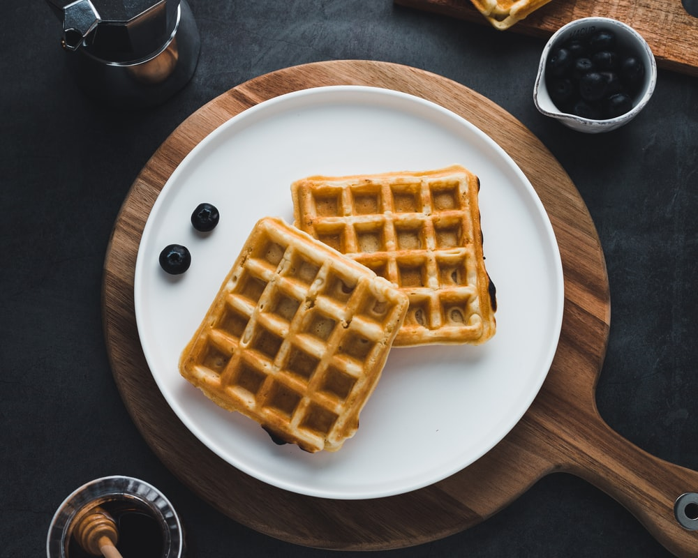

Waffel

Ingredients
- MILK
- EGG
- FLOUR
- OIL
- SUGAR
- Item 2
- Item 3
Instructions
- 1. Make the batter: Whisk the eggs, then add the flour, milk, and oil. Whisk in the sugar. Stir in the remaining ingredients. 2. Make the waffles: Pour the batter onto the hot, prepared waffle iron. Cook until golden brown and repeat with the remaining batter.